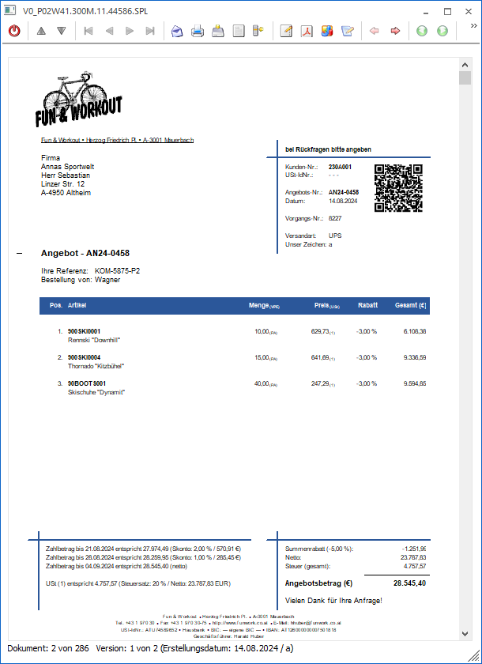

Das Fenster "Dokumenten-Vorschau" dient zur Darstellung von Archiveinträgen und kommt immer dann zum Einsatz, wenn ein Archivdokument in der WinLine betrachtet wird.

In der Vorschau werden unterschiedlichste Dateitypen dargestellt, u.a.:
ü SPL-Dateien
Hierzu zählen jene
Druck-Dateien, welche von der WinLine erzeugt werden (sogenannte
"Spoolview-Dateien").
ü PDF-Dateien
Hiermit sind
Acrobat Reader-Dateien gemeint, welche den Dateityp ".pdf" aufweisen.
ü Microsoft Office-Dateien
Zu
"Microsoft Office-Dateien" zählen unter anderem Dateien der Typen ".docx",
".xlsx" und ".msg".
ü Grafiken
Zu "Grafiken" zählen
unter anderem Dateien der Typen ".png, ".jpg" und ".bmp".
Die Art der Anzeige ist dabei immer vom jeweiligen Dateityp abhängig. Im Fuß der Anzeige werden (abhängig vom Archiveintrag) zusätzlich folgende Informationen dargestellt:
ü Dokument x von y
Man befindet
sich in einem Programmbereich, in welchem mehrere Archiveinträge (insgesamt "y")
angezeigt werden. Aktuell wird der Eintrag "x" betrachtet.
ü Seite x von y
Es handelt sich
um eine SPL-Datei mit insgesamt "y" Seiten. Aktuell wird die Seite "x"
angeschaut.
ü Version x von y
Es handelt sich
um ein Dokument mit insgesamt "y" Versionen. Aktuell wird die Version "x"
betrachtet.
Hinweis
Je kleiner die Version, desto aktueller ist sie.
ü Dateianhang x von y
Es handelt
sich um ein geklammertes Dokument, wobei "y" Dokumente zusammengehören. Aktuell
wird hierbei Dokument "x" angezeigt.
ü Erstelldatum x /y
Das Dokument
wurde am Datum "x" archiviert. Die Archivierung wurde dabei von Benutzer "y"
durchgeführt.
Ø Ende
Durch Anwahl des Buttons "Ende" bzw. der Taste ESC wird das Fenster "Archiv - Vorschau" geschlossen.
Ø vorheriges Dokument / nächstes Dokument
Wenn man in einem Programmbereich befindet, in welchem mehrere Archiveinträge angezeigt werden, so kann man mit Hilfe dieser Buttons zwischen den Dokumenten navigieren.
Ø Navigation (VCR-Buttons)
Mit den so genannten VCR-Buttons kann innerhalb der Vorschau geblättert werden, sofern das Dokument über mehrere Seiten verfügt und es sich um eine SPL-Datei handelt.
Ø Dokument mailen
Mit Hilfe des Buttons "Dokument mailen" kann das aktuelle Dokument gemailt werden.
Hinweis
Sollten über das Steuerelement "AUX MAIL" des Formular Editor Vorgaben getroffen worden sein (Mailadresse, Mailbody, etc.), so werden diese beim Versand von SPL-Dateien berücksichtigt.
Des Weiteren erfolgt der Versand der SPL-Datei in jener Dateiart, welche in den Einstellungen vorgegeben wurde (WinLine START - Parameter - Einstellungen - Register "Mail" - Option "Ausdrucke versenden").
Ø Dokument drucken
Durch Anwahl dieses Buttons erfolgt der Ausdruck des Dokuments. Um hierbei eine hohe Flexibilität zu gewährleisten, wird die Direktdruck-Funktion von Windows verwendet.
Ø Dokument speichern
Durch Anklicken des Buttons "Dokument speichern" wird der Archiveintrag unter Windows abgespeichert. Dabei kann nur der Speicherort bestimmt werden, der Dateiname bildet sich automatisch (Dokumenten-Id_Dateiname).
Ø Dokument öffnen
Mit Hilfe dieses Buttons wird das aktuelle Dokument in dem dafür vorgesehenen Windows-Programm geöffnet.
Ø Archiv öffnen
Durch Anwahl dieses Buttons wird das Fenster Archiveintrag suchen geöffnet und das Archivdokument dargestellt.
Ø Anmerkungen
Bei Anwahl des Buttons "Anmerkungen" wird der Anmerkungsmodus aktiviert, d.h.:
ü Es können Anmerkungen per Doppelklick in der Vorschau erfasst werden.
ü Bestehende Anmerkungen werden angezeigt und können editiert werden.
Hinweis
Die Funktion steht nur zur Verfügung, wenn es sich um SPL-Dateien oder und Grafik-Dateien (u.a. *.bmp, *.jpg) handelt. Des Weiteren werden Grafiken hierbei zunächst in eine WinLine Spooldatei umgewandelt, welches auch im Fuß der Vorschau ersichtlich ist.
Ø Pdf / Druckvorschau
Bei Anwahl dieses Buttons werden SPL-Dateien innerhalb der Vorschau in eine PDF-Anzeige umgewandelt und dargestellt.
Hinweis
Die zuletzt gewählte Auswahl wird benutzerspezifisch abgespeichert.
Ø Power Report
Durch Drücken des Buttons "Power Report" wird das Dokument grafisch dargestellt. Die Ausgabe ist individuell anpassbar und erfolgt in der Form von "Widgets", die unterschiedlichste Darstellungen ermöglichen.
Hinweis
Eine Anwahl des Buttons nicht möglich, wenn es in dem Dokument keine aufbereiteten Daten für den Power Report gibt.
Ø CRM-Fall öffnen
Mit Hilfe dieses Buttons wird der zugehörige CRM-Fall angezeigt. Der Button selber steht nur dann zur Verfügung, wenn das Dokument über die Beschlagwortung "015 - Fallnummer" verfügt.
Hinweis
Wenn die Dokumenten-Vorschau über das Programm "Buchen (Dialog Stapel)" aufgerufen wird (Button "Dokumente") und es sich um eine Beleg PRO-Rechnung handelt, dann kann mit Hilfe dieses Buttons ebenfalls der zugehörige CRM-Fall geöffnet werden.
Ø ältere Version / jüngere Version
Sobald das Dokument mehrere Versionen aufweist, so kann mit Hilfe dieser Buttons zwischen den Versionen navigiert werden.
Hinweis
Das Hinterlegen von weiteren Versionen ist u.a. über die Archivsuche ("Archiv Suche" bzw. "Archiveintrag suchen") möglich. Zusätzlich kann das WinLine FAKT Autoarchiv pro Beleg mehrere Versionen abstellen, wenn entsprechende Einstellungen in den Applikation-Parametern vorgenommen wurden (FAKT-Parameter - Belege - Autoarchiv).
Ø vorheriges geklammertes Dokument / nächstes geklammertes Dokument
Wenn mehrere Archiveinträge zu einem Eintrag geklammert wurden, so kann man mit Hilfe dieser Buttons durch die einzelnen Dokumente navigieren.
Ø Links rotieren / Rechts rotieren / Vertikal spiegeln / Horizontal spiegeln
Mit Hilfe dieser Buttons können Grafik-Dateien (u.a. *.bmp, *.jpg) bearbeitet werden, wobei die Änderung auch im Archiveintrag vermerkt wird. D.h. eine gespiegelte Grafik wird bei einer späteren Betrachtung weiterhin gespiegelt sein.
Ø Zoom In / Zoom Out
Durch Anwahl dieser Buttons kann im letzten Schritt eines Beleg PRO-Rechnungseingangs in dem Dokument gezoomt werden.